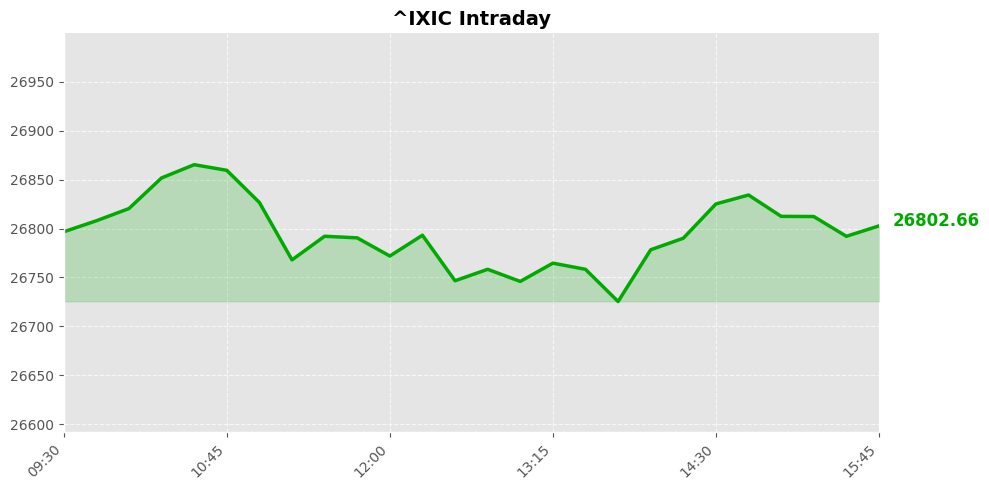
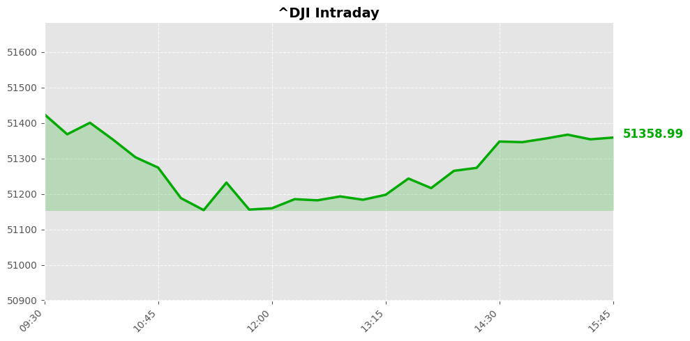
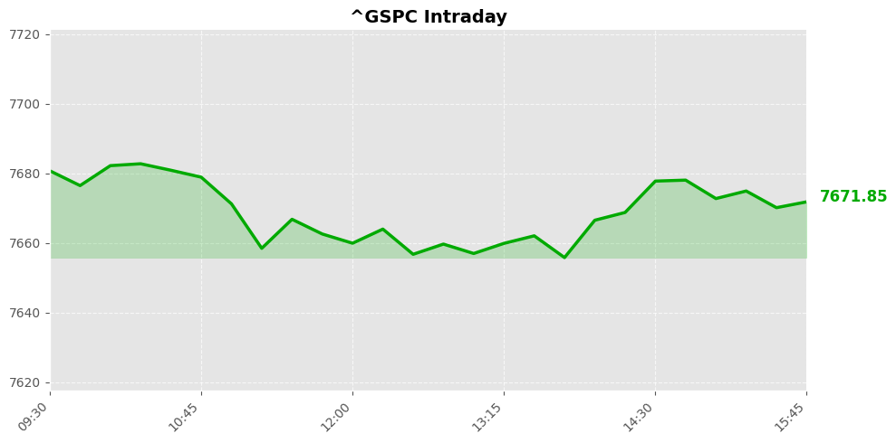

美股市场简报
2026年09月30日 | StockGate 美股通
📊 市场概览



今日美股三大指数集体收跌，交投情绪转为谨慎，呈现缩量震荡格局。纳斯达克指数报26797.54点，微跌0.09%；道琼斯指数收于51349.92点，回落0.26%；标普500指数定格于7670.84点，跌幅0.17%。整体资金呈避险观望态势，宏观流动性预期边际收敛主导日内波动，市场缺乏明确方向。
行业结构呈现显著轮动特征，资金高低切换加速。科技成长板块承压明显，高估值标的遭获利盘兑现；传统价值板块则逆势承接买盘，展现抗跌韧性。机构资金聚焦红利低波策略，但换手率未达峰值，显示增量资金入市节奏偏缓。全市场量价配合平淡，短期风险偏好维持中性偏弱。
📰 今日要闻
【要闻焦点】 预测市场交易者集中押注美国九月非农就业数据将显著超预期，反映宏观资金对劳动力市场韧性的强烈共识。
【投资推演】 强劲就业预期将对美联储降息节奏构成短期制约，但实体经济的稳健底盘将为纳斯达克指数提供坚实的基本面支撑。资金面需警惕长端利率预期反复引发的成长股估值回撤风险，建议优先配置自由现金流充沛且回购力度加码的科技龙头。
【要闻焦点】 美国政府正式宣布从战略石油储备中释放最高四千万桶原油，此操作系此前全球协调机制框架下的最后一批次。
【投资推演】 此举旨在对冲地缘冲突引发的供给扰动，对原油期货价格形成阶段性压制。布伦特原油中枢下移将显著改善下游化工制造与航空物流企业的成本结构，促使传统油气巨头加速资本开支纪律化，聚焦高内部收益率的页岩油核心产区。
【要闻焦点】 前商务部长雷蒙多公开警示人工智能技术在孕育长期新增岗位的同时，产业迭代初期必然伴随大规模结构性裁员浪潮。
【投资推演】 生产力重构的阵痛将直接重估企业级软件与服务板块的雇佣模型，部分劳动密集型互联网平台面临营收增速换挡。然而，人机协作替代逻辑反而夯实了云端算力集群与垂直大模型的商业化前景，机构投资者应逆向布局具备底层架构护城河的算力基建龙头。
【要闻焦点】 股债十年期累计回报差值已逼近历史极高分位，长期缺乏跨资产配置的资金正迎来数十年来最优的债券介入窗口。
【投资推演】 极端估值背离预示着大类资产轮动周期已然开启，美国国债市场的配置性价比急剧攀升。增配投资级信用债可有效构筑权益持仓的安全垫，优化整体投资组合的风险调整后收益，从容应对潜在的企业盈利增速放缓与流动性边际收敛考验。
【要闻焦点】 埃克森美孚资深运营高管正式加盟深海采矿企业董事会，全面提速海底多金属结核商业化开采的技术落地与产能规划。
【投资推演】 关键战略矿产供应链的自主可控将深度重塑新能源电池与先进制程芯片的原材料定价权，稀有金属ETF迎来基本面强催化。随着能源巨头跨界赋能，深海作业工程成熟度跨越式提升，相关矿业标的有望兑现产量阶梯式放量，但需严密监控环保审批趋严带来的资本开支延期隐患。
【要闻焦点】 受美国与伊朗重启高层外交谈判消息驱动，海湾地区主要股指遭遇抛售普遍收低，跨境资本避险情绪显著升温。
【投资推演】 地缘政治风险溢价的消退虽暂时拖累区域资本市场表现，却为国际大宗商品定价锚定提供了稳定坐标系。油价波动率下降将实质性缓解全球核心经济体的通胀黏性，间接提振全球连锁零售与客货运航司的利润率修复空间。建议战术性减持高弹性区域基金，增配具备全球化供应链抗风险能力的防御型公用事业与必需消费品。
【要闻焦点】 Coinbase风投部门联合CMCC全球资本完成对预测市场专业做市商Raven的战略注资，全面升级机构级衍生品交易流动性。
【投资推演】 加密资产生态向精细化做市模式演进，标志着去中心化金融网络迈入机构化深水区。双边订单厚度的提升将大幅压缩执行滑点，显著提升资产定价效率，进而打通传统财富管理资金合规入场的最后一公里。该产业趋势对头部合规交易所及链上数据分析服务商构成长效价值重估，但需警惕联邦监管框架突变引发的短线情绪踩踏。
【要闻焦点】 超高净值人群年度长寿医学干预支出已突破二十五万美元大关，靶向抗衰老疗法与全基因组健康管理需求呈现指数级爆发。
【投资推演】 超高端医疗消费市场的扩容正在彻底改写创新生物制药与细胞治疗赛道的估值体系。针对衰老生物学靶点的先导化合物有望斩获高额授权首付款，直接拉动Biotech企业研发管线溢价。尽管早期临床双盲试验仍存在疗效达标概率波动，但长线主权基金可战略性建仓具备里程碑突破潜力的基因编辑领军企业。
【要闻焦点】 苹果硬件工程主管特里努斯详细披露下一代终端产品演进蓝图，智能可穿戴设备与智能汽车座舱系统的深度融合路线正式浮出水面。
【投资推演】 硬件生态的跨界协同将强力激活消费电子代工与精密零组件产业的库存出清周期，带动上游光学传感与钛合金结构件厂商订单回暖。封闭体验的持续升级进一步锁定用户生命周期价值，为高毛利服务订阅业务输送稳定弹药。若试产良率如期达成，核心供应链伙伴将享有产能满载与稼动率飙升的红利，反之则需防范备货过度导致的存货减值计提压力。
【要闻焦点】 华尔街投行高盛正处于首席执行官权力
📈 宏观经济数据
💰 利率与货币政策
联邦基金利率： 3.6% 0.0个百分点 （前值: 3.6%）
观察日期: 2026-08-01 | 下次公布: 2026-10-28
10年期国债收益率： 5.2% +0.1个百分点 （前值: 5.2%）
观察日期: 2026-09-28 | 下次公布: 2026-09-30
🔥 通胀指标
消费者物价指数(CPI)： 3.4% +0.0个百分点 （前值: 3.3%）
观察日期: 2026-08-01 | 下次公布: 2026-10-14
PCE物价指数： 3.7% -0.0个百分点 （前值: 3.7%）
观察日期: 2026-07-01 | 下次公布: 2026-10-30
核心PCE物价指数： 3.3% +0.0个百分点 （前值: 3.3%）
观察日期: 2026-07-01 | 下次公布: 2026-10-30
生产者物价指数(PPI)： 5.4% +0.6个百分点 （前值: 4.8%）
观察日期: 2026-08-01 | 下次公布: 2026-10-15
👷 就业指标
非农就业人数变化： 159075.0K +162.0K （前值: 158913.0K）
观察日期: 2026-08-01 | 下次公布: 2026-10-02
失业率： 4.1% 0.0个百分点 （前值: 4.1%）
观察日期: 2026-08-01 | 下次公布: 2026-10-02
🛒 消费者指标
零售销售月度变化： 1.1% +1.6个百分点 （前值: -0.5%）
观察日期: 2026-08-01 | 下次公布: 2026-10-15
个人消费支出月度变化： 0.2% -0.2个百分点 （前值: 0.3%）
观察日期: 2026-07-01 | 下次公布: 2026-10-30
🔮 市场展望
今日美股三大指数微幅收跌，市场处于高位消化期。鉴于民间预测显示九月新增就业强劲，流动性预期偏暖，纳斯达克指数大概率在日内低点形成有效支撑位。科技巨头苹果的新品规划正逐步兑现，将为明后日行情提供明确的向上驱动。预计大盘将呈探底回升走势，若成交量温和放大，多头有望发起突破并开启新一轮反弹周期，建议聚焦半导体与消费电子主线。
【重点风控与关注焦点】
外部扰动与宏观博弈并存，交易需保持敏锐。中东地缘摩擦及欧洲安全事件虽未直接冲击美股基本面，但需高度警惕情绪退潮带来的快速回撤。上方密集套牢盘构成明显压力位，严禁左侧盲目追涨。密切跟踪下周公布的经济数据与美联储议息决议，若通胀粘性超预期，将触发明确的风险警示。整体策略应以轻仓试错为主，严守纪律，防范黑天鹅冲击。
数据来源：Yahoo Finance / Finnhub / Alpha Vantage / FRED / Reddit
报告生成：2026-09-30 04:53
⚠️ 免责声明：美股市场简报 - 2026年09月30日。StockGate 美股通 - 本报告仅供参考，不构成投资建议。投资有风险，入市需谨慎。
🔥 扫码加入【股神星】专属群 🔥
扫码加入股神星交流群，一起享受财富人生
📱 下载飞书App，扫描二维码入群
获取更多美股投资洞察与实时动态